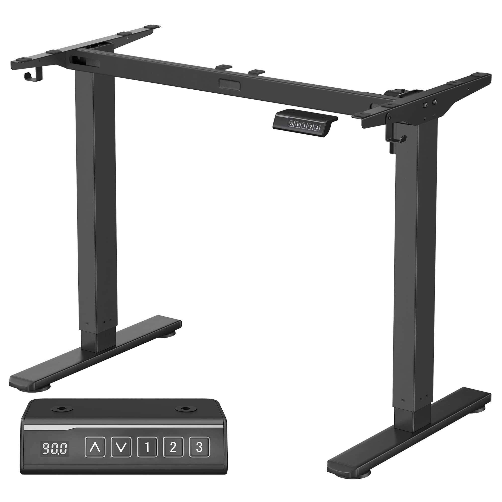
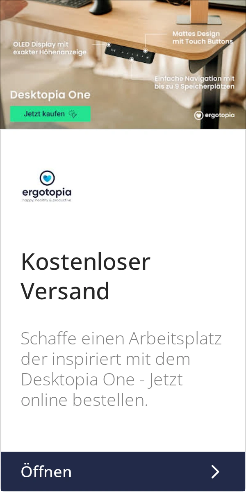

FW-C06 · 一只手找到自己的常用高度
评分：92/100，排名5，Top 10 / 第一批。分项：{'product_30': 30, 'need_25': 24, 'reference_20': 17, 'difference_15': 12, 'feasibility_10': 9}。评分是测试潜力，不是效果预测。
产品：Economy Solid 白色 140×70 cm。
用户：首次购买电动升降桌的用户。
需求：看懂日常如何操作，以及面板装在哪一侧。
卖点：两组记忆高度和原装手控器。
机会类型：二：已有卖点的视觉强化。
参考什么：参考整桌加手控器放大图，解释“看哪里、按哪里”。
为什么：公开产品信息确认两组记忆位；操作疑问是购买流程推断，不是用户调研比例。
如何差异化：使用P2真实黑色面板和原键位；整桌放小，操作区放大，避免把大面板贴在桌面上。
场景：深灰色背景的小工作角，台面保持少量输入设备。
构图：主画面从使用者右前方近拍，包含桌边、原装控制器、手指；左上放小整桌参考，说明局部位置。渠道改版：PMax版拍完整桌子与操作手势的同一张照片，不加小图或局部拼贴。
人物及动作：成年使用者只用一只手轻按已核验的记忆键，手指不遮住全部键位；静态不画运动速度。
渠道：Meta Feed主方案；Google PMax需另做干净单幅版本。比例：1:1、4:5。德语主题：Deine Höhe auf Knopfdruck。
资格依据：一体桌板；单电机；两组记忆高度；白桌白架；对应140×70在售变体。
不能添加的宣称：页面文案提到100–160 cm，但当前可选变体只核验100/120/140 cm；不把160 cm写成可售Solid。
证据边界：有A类实际图片参考；具体原创场景和转化效果尚待测试。图片参考体现视觉方法，不构成竞品效果数据。需求证据：P2；竞品部位表达而非竞品键位为参考。
参考原图
 ERGO-GOOG-026
ERGO-GOOG-026ERGO-GOOG-026 · Ergotopia · Google · 真实广告内的图像组件（非完整广告版式）
原广告来源。详情日期与德国地区已核验。

SONG-GOOG-074SONG-GOOG-074 · SONGMICS · Google · 真实广告内的图像组件（非完整广告版式）
原广告来源。详情日期与德国地区已核验。

ERGO-GOOG-066ERGO-GOOG-066 · Ergotopia · Google · 完整导出广告画面
原广告来源。详情日期与德国地区已核验。